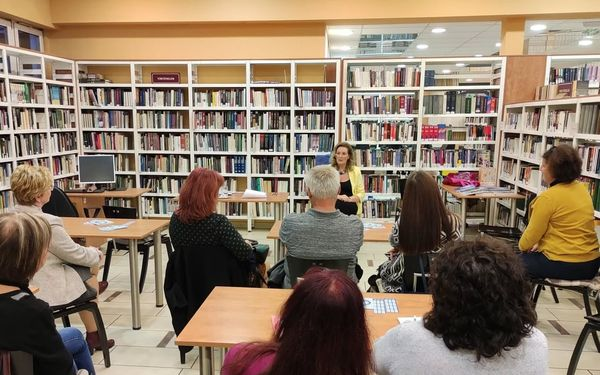

Előadások & Programok
Előadások, közösségi találkozók és programok
Az írás és a kineziológusi múlt tapasztalatai nemcsak a könyvek lapjain élnek, hanem a személyes találkozásokban is. Örömmel teszek eleget meghívásoknak kulturális központokba, könyvtárakba, közösségekbe és szakmai műhelyekbe, hogy élő beszélgetések keretében járjuk körül az életút-váltások, a belső megújulás és a mindennapi harmónia kérdéseit.

Tíz téma
Az előadási témáim
-
Sosem késő újrakezdeni! Az élet ereje
Mi az élet? Mi az erő? Mi az életerő? Mi adja az élet erejét? Mi csökkenti, mi az, ami növeli azt?
Ezenkívül exkluzív bepillantást enged könyveim keletkezésébe, és személyes válaszokat ad arra, hogyan találhatjuk meg belső rendünket és válhatunk tudatos életalkotókká – kortól függetlenül.
-
Stressz nélkül könnyebb az élet
Mi a stressz, hogyan alakul ki, mik a tünetei, miben akadályoz bennünket és mik a következményei és mi a megoldás?
-
Az énkép és a testkép kialakulása
Valóban a külalakunkkal van bajunk? Az elégedetlenség külső tünetei mögött mindig egy belső ok húzódik: „nem vagyok elég jó, mert nem vagyok elég szép”. Az első benyomás pszichológiája (55% megjelenés, 38% beszédmodor, 7% tartalom) mellett arról beszélgetünk, hogyan alakíthatjuk ki az egészséges énképünket.
-
Férfi-női egyensúly napjainkban
A modern párkapcsolat kihívásai és a változó nemi szerepek. Legyen szó párkapcsolati elakadásokról vagy arról, ha valaki nehezen találja meg a párját, ez a téma mindannyiunkat érint. Mit tehetünk a harmonikus, kiegyensúlyozott kapcsolatért?
-
Örök női értékek
Hogyan éljük meg nőiségünket a modern világban? Anyaság vagy karrier? Mi történik, ha a nő válik családfenntartóvá? Hogyan kerülhetjük el a női betegségeket, és honnan meríthet az édesanya érzelmi stabilitást, hogy a család igazi támasza lehessen?
-
Hogyan teremtsünk bőséget az életünkben?
A vonzás törvénye és a középpontunk hatalma. Energiánk oda megy, ahová a figyelmünket irányítjuk. Megvizsgáljuk, hogyan fordíthatjuk el a tekintetünket a nem működő dolgokról arra, amiért hálásak lehetünk, és hogyan tehetjük a bőséget a mindennapjaink részévé.
-
A mai kor gyermekei – Hogyan bánjunk velük?
Mit tehetünk értük, ha tanulási vagy viselkedési problémát tapasztalunk náluk? A régi, hatalmon és félelmen alapuló nevelési szemlélet mára idejétmúlt. Az új szemlélet a szereteten és a szívközpontúságon alapszik, ahol minden gyermek ajándék. De hogyan váltsunk át erre, ha minket még a régi módszerekkel neveltek?
-
Magzatkorunk és születésünk nyomai a személyiségünkben
Életünk korai szakaszainak érzelmi hátteréből származó személyiségjegyeinket életünk végéig hordozzuk. Megváltoztathatóak ezek? Ez a legnehezebb és legkényesebb téma, hiszen a legfőbb szerepünket – a szülői létet és a saját kora gyermekkori mintáinkat – teszi nagyító alá, még akkor is, ha szeretetet kaptunk.
-
Szexualitás és kreativitás
Hogyan éljük meg a hétköznapi életünk egyik hatalmas örömforrását, a kreativitás támogatóját, a Teremtés misztériumát? A kreativitás (görög eredetű szó: nemzeni, szülni, alkotni) mélyen összefonódik a szexualitással. Mit tehetünk, hogy életünk minden területén felszabadítsuk ezt a teremtőerőt?
-
Beszédes arc – Ismerd meg önmagad!
Minden az arcunkra van írva. Bevezetés a viselkedési genetikába: a megjelenésünk és arcstruktúránk mögötti genetikai lenyomatok megismerése. Segít abban, hogy megértsük a saját igényeinket, és tiszteletben tartsuk a társunk eltérő vonásait, javítva a konfliktuskezelést és a kommunikációt.
Szervezőknek, intézményeknek
Ha szívesen látna vendégül egy inspiráló, mély gondolatokat hozó előadást vagy interaktív beszélgetést az Ön által vezetett közösségben, könyvtárban vagy kulturális térben, kérem, vegye fel velem a kapcsolatot az alábbi elérhetőségeken.
Kapcsolatfelvétel & Előadás igénylése